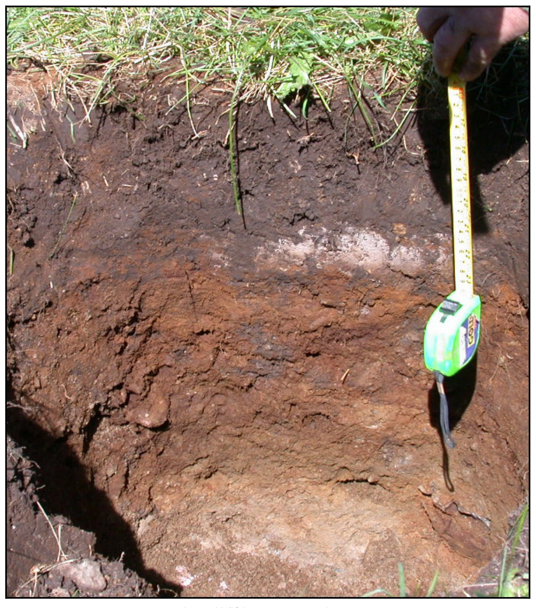

Identification & Caractéristiques Générales
La série de sols Woodbridge s'est développée sur un till morainique basal à texture de loam, constitué d'une matrice minérale mixte incluant une proportion marquée de fragments de schistes et de grès. Géomorphologiquement, ce dépôt glaciaire s'observe principalement dans les Cantons de l'Est et sur les piémonts associés, occupant des positions topographiques de pentes longues et accentuées, généralement situées en position inférieure par rapport aux séries de sols bien drainés adjacentes. La topographie se caractérise par des déclivités variant généralement de 2 % à 30 %, où le matériau parental présente une disposition en placages ou en couvertures continues d'épaisseur variable sur le substratum rocheux.
Le profil pédologique se caractérise par un drainage naturel modérément bon à imparfait, influencé par la présence d'une discontinuité physique majeure en profondeur. L'horizon de surface (Ap), d'une épaisseur d'environ 15 cm, est constitué d'un loam brun gris foncé à structure granulaire faible, renfermant de 5 % à 20 % de fragments grossiers et présentant une réaction très fortement acide. Le solum montre des évidences d'oxydoréduction, matérialisées par des mouchetures de rouille et des marbrures qui s'intensifient à la base du profil (Bmgj), traduisant un engorgement temporaire ou un suintement latéral (water seepage) au contact des couches inférieures. Le substratum (Cgxj), rencontré à faible profondeur (généralement autour de 35 cm), est constitué d'un till compact, induré, qualifié de "fragipan" ou "hardpan", dont la compacité élevée restreint fortement la perméabilité à l'eau ainsi que la pénétration racinaire verticale.
Sur le plan agronomique, les sols de la série Woodbridge imposent des contraintes d'utilisation liées principalement à l'impédance mécanique du sous-sol compact, à la rusticité du drainage interne et à la pierrosité de surface qui complexifie les opérations de travail du sol et de défrichement. La régie de mise en valeur agricole requiert impérativement la mise en place d'un réseau de drainage souterrain adéquat pour pallier l'égouttement interne déficient, ainsi qu'un chaulage régulier afin de corriger l'acidité forte à très forte du complexe absorbant. Ces sols sont utilisés pour les grandes cultures, les cultures fourragères et, localement dans les zones climatiquement propices, pour la arboriculture fruitière (vergers), pour laquelle un aménagement rigoureux du drainage s'avère indispensable. Le risque d'érosion hydrique demeure modéré en raison de la nature cohérente du matériau et de sa topographie en pentes longues, mais nécessite néanmoins des pratiques de travail cultural selon les courbes de niveau.
Classification Taxonomique & Environnement Pédologique
| Ordre Pédologique | Brunisolique |
|---|---|
| Grand Groupe (SCSS) | Brunisol dystrique |
| Sous-Groupe Taxonomique | Brunisol dystrique éluvié gleyifié |
| Famille Pédologique | Loameuse-grossière, mixte sableux, acide |
| Mode de Dépôt Parental | Morainique |
| Classe de Drainage Naturel | Modérément bien drainé |
| Régime Thermique & Humidité | Frais / Humide |
Description Morphologique du Profil Type
Séquences génétiques des horizons pédologiques caractérisant le profil type représentatif de la série Woodbridge :
Profil naturel (vierge) — Comté de Shefford
✓ Source : Comté de Shefford — Page 36Couleur Munsell : Non précisée
Structure & Consistance : Polyédrique à granulaire
Description morphologique : litière de feuilles, etc.;
Couleur Munsell : Non précisée
Structure & Consistance : En miettes
Description morphologique : sol franc noir à brun foncé; structure en miettes; friable; pH 4.8.
Couleur Munsell : Non précisée
Structure & Consistance : Polyédrique à granulaire
Description morphologique : généralement absent ou une faible proportion de terre franche grise
Couleur Munsell : Non précisée
Structure & Consistance : Granuleuse
Description morphologique : sol franc brun; faible structure granuleuse; friable; quelques pierres; à des taches brunes plus foncées le long des galeries occupées par les racines; pH 5.0
Couleur Munsell : Non précisée
Structure & Consistance : Polyédrique à granulaire
Description morphologique : sol franc brun pâle à brun jaunâtre; friable; fragments de schiste et petites pierres de grès; peut être légèrement marbrée; pH 5.1
Couleur Munsell : Non précisée
Structure & Consistance : Laminée
Description morphologique : till franc gris foncé à gris jaunâtre; compact; marbré; structure laminée; pH 5.8.
Profil cultivé (agricole) — Comté de Frontenac
✓ Source : Comté de Frontenac — Page 57Couleur Munsell : 2.5Y 4/3, 10YR 6/2.5
Structure & Consistance : Polyédrique à granulaire
Description morphologique : Loam brun olive à brun gris foncé (2.5 Y 4/3 h), gris brun clair à brun pâle (10 YR 6/2.5 s); granulaire, fine, faible; très friable; racines très abondantes, de toutes les grosseurs, non orientées; fragments grossiers à graviers anguleux, caillouteux, 20% en volume; limite abrupte, ondulée; épaisseur de 15 à 21 cm; fortement acide.
Couleur Munsell : 2.5Y 54/4 (matrice), 2.5Y 6.5/3 (marbrures)
Structure & Consistance : Polyédrique à granulaire
Description morphologique : Loam brun olive clair (2.5 Y 54/4 h), brun jaune clair à gris clair (2.5 Y 6.5/3 s); marbrures rares, fines, moyennes, marquées, brun jaune foncé (10 YR 4/6 h); polyédrique subangulaire, fine à moyenne, faible à modérée très friable; racines abondantes, fines, très fines, moyennes, microracines, verticales, obliques; fragments grossiers, à graviers anguleux, caillouteux, 20% en volume; limite nette, ondulée; épaisseur de 8 à 19 cm; fortement acide.
Couleur Munsell : 5Y 5/3 (matrice), 2.5Y 7/2 (marbrures)
Structure & Consistance : Polyédrique à granulaire
Description morphologique : Loam olive (5 Y 5/3 h), gris clair (2.5 Y 7/2 s); marbrures rares, fines, moyennes, distinctes, brun olive clair (2.5 Y 5/4 h); polyédrique subangulaire, fine à moyenne, modérée; très friable; racines très peu abondantes, fines, très fines, microracines, verticales, obliques; fragments grossiers, à graviers anguleux, caillouteux, 30% en volume; limite graduelle, régulière; épaisseur de 5 à 13 cm; modérément acide.
Couleur Munsell : 5Y 4/3 (matrice), 2.5Y 6.5/2 (marbrures)
Structure & Consistance : Polyédrique à granulaire
Description morphologique : Loam olive (5 Y 4/3 h), gris brun clair à gris clair (2.5 Y 6.5/2 s); marbrures rares, fines, moyennes, marquées, brun olive clair (2.5 Y 5/6 h); polyédrique subangulaire, fine à moyenne, modérée; friable à ferme; racines très peu abondantes, fines, très fines, verticales, obliques; fragments grossiers, à graviers anguleux, caillouteux, 30% en volume; modérément acide.
Profil naturel (vierge) — Comté de Lotbinière — Phase mince
✓ Source : Comté de Lotbinière — Page 79Couleur Munsell : Non précisée
Structure & Consistance : Polyédrique à granulaire
Description morphologique : Litière de feuilles semi-décomposées.
Couleur Munsell : Non précisée
Structure & Consistance : En miettes
Description morphologique : Loam brun foncé à noir; structure en miettes; friable; pH: 4.8.
Couleur Munsell : Non précisée
Structure & Consistance : Polyédrique à granulaire
Description morphologique : Horizon discontinu, à peine visible, coloration gris cendré; pH: 4.8-4.9.
Couleur Munsell : Non précisée
Structure & Consistance : Polyédrique à granulaire
Description morphologique : Loam brun pâle à jaune brun; friable; fragments de pierres (ardoises, schistes); pH: 5.0-5.2.
Couleur Munsell : Non précisée
Structure & Consistance : Polyédrique à granulaire
Description morphologique : Loam brun pâle à jaune brun; friable, pierreux (ardoises), avec mouchetures de rouille; pH: 5.2-5.4.
Couleur Munsell : Non précisée
Structure & Consistance : Polyédrique à granulaire
Description morphologique : Roche-mère: till de loam gris foncé à gris jaune, très compact; pH: 5.8.
Profil naturel (vierge) — Comté de Lotbinière
✓ Source : Comté de Lotbinière — Page 80Couleur Munsell : Non précisée
Structure & Consistance : Polyédrique à granulaire
Description morphologique : Débris organiques, légèrement décomposés.
Couleur Munsell : 5YR 2/2
Structure & Consistance : Polyédrique à granulaire
Description morphologique : Humus brun rouge foncé à noir (5YR 2/2), assez bien minéralisé, (mull-mor) granulaire, friable, avec pierres (ardoises, schistes); pH: 4.2.
Couleur Munsell : 7.5YR 6/2
Structure & Consistance : Polyédrique à granulaire
Description morphologique : Horizon discontinu: loam gris rosé à gris brun pâle (7.5YR 6/2), friable; pH: 4.6.
Couleur Munsell : 7.5YR 4/4 (matrice), 2.5YR 3/3 (marbrures)
Structure & Consistance : Polyédrique
Description morphologique : Loam brun foncé à brun rouge foncé (7.5YR 4/4 à 2.5YR 3/3). Structure polyédrique; compact, pierreux (ardoises, schistes) avec mouchetures de rouille; pH: 4.8.
Couleur Munsell : 5Y 6/3
Structure & Consistance : Massive ou laminaire
Description morphologique : Loam olive pâle (5Y 6/3), excessivement compact et cimenté; pas d'effervescence; structure massive ou laminaire; pierreux; pH: 6.8.
Couleur Munsell : 2.5Y 5/4
Structure & Consistance : Massive ou feuilletée
Description morphologique : Roche-mère: till de loam olive pâle (2.5Y 5/4), excessivement compact, cimenté; pas d'effervescence; structure massive ou feuilletée; pierreux; pH: 6.9. N.B.: Le sous-sol présente généralement, surtout durant les périodes sèches de l'été, un "alios" ou "hardpan" typique.
Profil cultivé (agricole) — Comté de Mégantic
✓ Source : Comté de Mégantic — Page 75Couleur Munsell : 5Y 3/2, 5Y 5/1
Structure & Consistance : Polyédrique à granulaire
Description morphologique : Loam limoneux brun gris très foncé (2,5 Y 3/2 h), gris (5 Y 5/1 s); granulaire, fine à moyenne, modérée à forte; friable; racines très abondantes, moyennes, fines, très fines et microscopiques, horizontales et obliques; limite abrupte, régulière; épaisseur de 15 à 20 cm; moyennement acide.
Couleur Munsell : Non précisée
Structure & Consistance : Polyédrique à granulaire
Description morphologique : Loam de couleur pâle; très friable; racines abondantes, fines, très fines et microscopiques; limite abrupte, brisée; épaisseur de 0 à 2 cm.
Couleur Munsell : 10YR 4/3 (matrice), 5Y 5/2 (marbrures)
Structure & Consistance : Polyédrique à granulaire
Description morphologique : Loam brun foncé (10 YR 4/3 h), brun gris (2,5 Y 5/2 s); marbrures fréquentes, fines, distinctes, brun jaune (10 YR 5/6 h); granulaire à polyédrique subangulaire, moyenne, faible à modérée; friable; racines abondantes, fines, très fines et microscopiques, horizontales et obliques; fragments grossiers, graveleux, environ 10% en volume; limite abrupte, ondulée; épaisseur de 4 à 10 cm; moyennement acide.
Couleur Munsell : 5Y 5/3 (matrice), 5Y 6/2 (marbrures)
Structure & Consistance : Polyédrique à granulaire
Description morphologique : Loam sableux fin brun gris à olive clair (2,5 Y 5/3 h), gris olive clair (5 Y 6/2 s); marbrures rares, fines, faibles; granulaire à polyédrique subangulaire, fine à moyenne, faible; friable; racines abondantes, fines, horizontales et obliques; fragments grossiers, graveleux, environ 10% en volume; limite nette, régulière à ondulée; épaisseur de 5 à 15 cm; moyennement acide.
Couleur Munsell : 5Y 5/3 (matrice), 5Y 6/1 (marbrures)
Structure & Consistance : Polyédrique subangulaire
Description morphologique : Loam sableux fin olive (5 Y 5/3 h), gris (5 Y 6/1 s); marbrures rares, fines, marquées, brunes (10 YR 5/3 h); pseudo-structure polyédrique subangulaire, fine; ferme; racines très peu abondantes, très fines et microscopiques, obliques; fragments grossiers, graveleux, environ 10% à 20% en volume; limite graduelle, ondulée; épaisseur de 14 à 23 cm; moyennement acide.
Couleur Munsell : 5Y 5/1 (matrice), 5Y 6/1 (marbrures)
Structure & Consistance : Polyédrique à granulaire
Description morphologique : Loam gris (5 Y 5/1 h), gris (5 Y 6/1 s); marbrures rares, grossières, marquées, brunes (10 YR 5/3 h); massive; très ferme; fragments grossiers, graveleux, environ 20% en volume; moyennement acide.
Profil représentatif — Étude pédologique du bassin vers — Variante squelettique-sableux
✓ Source : Étude pédologique du bassin vers — Page 88Couleur Munsell : 10YR 4/6
Structure & Consistance : Polyédrique à granulaire
Description morphologique : Bf 21-35 SL, S, SGL (Graveleux) Brun jaunâtre foncé 10YR 4/6 Graviers 5-30 Particulaire Très friable à meuble
Couleur Munsell : 2.5Y 4/2
Structure & Consistance : Polyédrique à granulaire
Description morphologique : Bg, (Cg) 22-37 SL, SGL (Graveleux) Brun grisâtre foncé 2.5Y 4/2 Graviers 5-20 Particulaire Très friable à meuble
Couleur Munsell : 10YR 4/6
Structure & Consistance : Polyédrique à granulaire
Description morphologique : Bf 22-37 SL, SGL Très graveleux Brun jaunâtre foncé 10YR 4/6 Graviers 35-50 Particulaire Très friable à meuble
Couleur Munsell : Non précisée
Structure & Consistance : Polyédrique à granulaire
Description morphologique : Bf, (Bfcg) 27-39 SL, S
Couleur Munsell : 10YR 2.5/2
Structure & Consistance : Polyédrique à granulaire
Description morphologique : Bhc 25-39 SL, S - Brun très foncé 10YR 2.5/2 Graviers 0-5 Amorphe Friable à très friable
Couleur Munsell : Non précisée
Structure & Consistance : Polyédrique à granulaire
Description morphologique : Bg, (Cg) 28-44 SL, S - Brun grisâtre foncé à brun grisâtre très foncé 2.5Y 3,5/2 Graviers 0-5 Particulaire Très friable à meuble
Couleur Munsell : 10YR 4/6
Structure & Consistance : Polyédrique à granulaire
Description morphologique : Bf, (Bfc) 25-39 SFL, SL - Brun jaunâtre foncé 10YR 4/6 Graviers 0-10 Granulaire, fine, modérée Très friable à meuble
Couleur Munsell : 2.5Y 4/3
Structure & Consistance : Polyédrique à granulaire
Description morphologique : Bg, (Cg) 28-42 SFL, STFL - Brun olivâtre 2.5Y 4/3 Graviers 0-10 Particulaire ou amorphe Très friable
Profil cultivé (agricole) — Comté de Arthabaska
✓ Source : Comté de Arthabaska — Page 48Couleur Munsell : 10YR 4/2, 5Y 5/2
Structure & Consistance : Polyédrique à granulaire
Description morphologique : Loam brun-gris foncé (10 YR 4/2 h), brun-gris (2,5 Y 5/2 s); granulaire, très fine à fine, très faible; très friable; racine très abondantes, fines, très fines et microscopiques, non orientées; fragments grossiers, graveleux, caillouteux et pierreux (blocailleux), environ 10%; limite abrupte, ondulée; épaisseur de 10 à 18 cm; extrêmement acide.
Couleur Munsell : Non précisée
Structure & Consistance : Polyédrique à granulaire
Description morphologique : Loam; très friable; racines abondantes, fines, très fines et microscopiques, horizontales et obliques; fragments grossiers, graveleux, caillouteux et pierreux (blocailleux), environ 10%; limite abrupte, interrompue; épaisseur de 0 à 2 cm.
Profil forestier / boisé — Comté de Arthabaska
✓ Source : Comté de Arthabaska — Page 49Couleur Munsell : 10YR 4/3, 10YR 6/3
Structure & Consistance : Polyédrique à granulaire
Description morphologique : Loam brun foncé (10 YR 4/3 h), brun pâle (10 YR 6/3 s); granulaire, très fine à fine, très faible; très friable; racines abondantes, fines, très fines et microscopiques, horizontales et obliques, fragments grossiers, graveleux, caillouteux et pierreux (blocailleux, environ 10%; limite abrupte, interrompue; épaisseur de 0 à 6 cm; très fortement acide.
Couleur Munsell : 5Y 5/3 (matrice), 5Y 6/2 (marbrures)
Structure & Consistance : Polyédrique à granulaire
Description morphologique : Loam sableux brun-gris à olive clair (2,5 Y 5/3 h), gris-brun clair (2,5 Y 6/2 s); quelques mouchetures, petites, faibles; brun-gris (2,5 Y 5/2 s); granulaire, très fine à fine, très faible; très friable; racines abondantes, fines, très fines et microscopiques, horizontales et obliques; fragments grossiers, graveleux, caillouteux et pierreux (blocailleux), environ 10%; limite nette, régulière; épaisseur de 23 à 28 cm; très fortement acide.
Couleur Munsell : 5Y 5/1 (matrice), 5Y 6/2 (marbrures)
Structure & Consistance : Polyédrique à granulaire
Description morphologique : Loam sableux fin graveleux gris (5 Y 5/1 h), gris olive clair à olive pâle (5 Y 6/2,5 s); mouchetures nombreuses, moyennes, très marquées, brun-jaune (10 YR 5/8 h); particulaire, sans structure; friable à ferme; peu de racines, très fines et microscopiques, horizontales et obliques; fragments grossiers, graveleux, caillouteux et pierreux (blocailleux), environ 30%; limite nette, ondulée; épaisseur de 10 à 27 cm; très fortement acide.
Couleur Munsell : 5Y 5/2 (matrice), 5Y 6/2 (marbrures)
Structure & Consistance : Polyédrique à granulaire
Description morphologique : Loam sableux graveleux gris olive (5 Y 5/2 h), gris olive clair (5 Y 6/2 s); mouchetures nombreuses, grandes, distinctes et très marquées brun-gris (2,5 Y 5/2 h) et brun vif (7,5 YR 5/8 h); particulaire, sans structure; ferme; très peu de racines, très fines et microscopiques, horizontales et obliques; fragments grossiers, graveleux, caillouteux et pierreux (blocailleux), environ 30%; très fortement acide.
Profil forestier (sous boisé) — Comté de Wolfe
✓ Source : Comté de Wolfe — Page 23Couleur Munsell : 10YR 4/2, 10YR 5/2
Structure & Consistance : Polyédrique à granulaire
Description morphologique : Loam brun gris foncé (10 YR 4/2 h), brun gris (10 YR 5/2 s) ; granulaire, fine, modéré ; très friable ; racines très abondantes de toutes les grosses, non orientées ; fragments grossiers, graveleux, à graviers anguleux, caillouteux, 10% en volume ; limite abrupte, régulière ; épaisseur de 17 à 21 cm ; très fortement acide.
Couleur Munsell : 10YR 4/4, 2.5Y 5.5/3
Structure & Consistance : Polyédrique à granulaire
Description morphologique : Loam brun jaune foncé (10 YR 4/4 h), brun gris à brun jaune clair (2.5 Y 5.5/3 s) ; granulaire, fine, modérée ; très friable ; racines très abondantes, de toutes les grosseurs, obliques ; fragments grossiers, à graviers anguleux, caillouteux, 20% en volume ; limite nette, onduleuse ; épaisseur de 5 à 9 cm ; très fortement acide.
Couleur Munsell : 2.5Y 4.5/4 (matrice), 2.5Y 6/3 (marbrures)
Structure & Consistance : Polyédrique à granulaire
Description morphologique : Loam brun olive à brun olive clair (2.5 Y 4.5/4 h), gris brun clair à brun jaune clair (2.5 Y 6/3 s) ; quelques marbrures, petites, faibles ; granulaire, fine, faible à modérée ; très friable ; racines abondantes, de toutes les grosseurs, obliques ; fragments grossiers, à graviers anguleux, caillouteux, 20% en volume ; limite nette, onduleuse ; épaisseur de 9 à 13 cm ; fortement acide.
Couleur Munsell : 5Y 6/4 (matrice), 2.5Y 6/2 (marbrures)
Structure & Consistance : Polyédrique à granulaire
Description morphologique : Loam olive pâle (5 Y 6/4 h), gris brun clair (2.5 Y 6/2 s) ; quelques marbrures, petites faibles ; polyédrique subangulaire, fine à moyenne, faible ; très friable ; racines peu abondantes, moyennes, fines, très fines, obliques ; fragments grossiers, à graviers anguleux, caillouteux, 20% en volume ; limite abrupte, onduleuse ; épaisseur de 8 à 11 cm ; fortement acide.
Couleur Munsell : 5Y 4/2 (matrice), 5Y 6/3 (marbrures)
Structure & Consistance : Polyédrique à granulaire
Description morphologique : Loam gris olive (5 Y 4/2 h), olive pâle (5 Y 6/3 s) ; marbrures assez nombreuses, petites, moyennes, marquées, brun jaune (10 YR 5/4 h) ; polyédrique subangulaire, moyenne, modérée ; ferme ; fragments grossiers, à graviers anguleux, caillouteux, 30% en volume ; moyennement acide.
Profil cultivé (agricole) — Comté de Beauce
✓ Source : Comté de Beauce — Page 42Couleur Munsell : 5Y 4/3, 10YR 6/2
Structure & Consistance : Polyédrique à granulaire
Description morphologique : Loam brun olive à brun gris foncé (2,5 Y 4/3 h), gris brun clair à brun pâle (10 YR 6/2,5 s); granulaire, fine, faible; très friable; racines très abondantes, de toutes les grosses, non orientées; fragments grossiers à graviers anguleux, caillouteux, 20% en volume; limite abrupte, onduler; épaisseur de 15 à 21 cm; fortement acide.
Couleur Munsell : 5Y 5/4 (matrice), 10YR 4/6 (marbrures)
Structure & Consistance : Polyédrique à granulaire
Description morphologique : Loam brun olive clair (2,5 Y 5/4 h), brun jaune clair à gris clair (2,5 Y 6,5/3 s); marbrures rares, fines, moyennes, marquées, brun jaune foncé (10 YR 4/6 h); polyédrique subangulaire, fine à moyenne, faible à modérée très friable; racines abondantes, fines, très fines, microracines abondantes, verticales, obliques; fragments grossiers, à graviers anguleux, caillouteux, 20% en volume; limite nette, ondulée; épaisseur de 8 à 19 cm; fortement acide.
Couleur Munsell : 5Y 5/3 (matrice), 5Y 7/2 (marbrures)
Structure & Consistance : Polyédrique à granulaire
Description morphologique : Loam olive (5 Y 5/3 h), gris clair (2,5 Y 7/2 s); marbrures rares, fines, moyennes, distinctes, brun olive clair (2,5 Y 5/4 h); polyédrique subangulaire, fine à moyenne, modérée; très friable; racines très peu abondantes, fines, très fines, microracines, verticales, obliques; fragments grossiers, à graviers anguleux, caillouteux, 30% en volume; limite graduelle, régulière; épaisseur de 5 à 13 cm; modérément acide.
Couleur Munsell : 5Y 4/3 (matrice), 5Y 5/6 (marbrures)
Structure & Consistance : Polyédrique à granulaire
Description morphologique : Loam olive (5 Y 4/3 h), gris brun clair à gris clair (2,5 Y 6,5/2 s); marbrures rares, fines, moyennes, marquées, brun olive clair (2,5 Y 5/6 h); polyédrique subangulaire, fine à moyenne, modérée; friable à ferme; racines très peu abondantes, fines, très fines, verticales, obliques; fragments grossiers, à graviers anguleux, caillouteux, 30% en volume; modérément acide.
Profils Photographiques & Planches de Terrain
Documents iconographiques, figures pédologiques et coupes de terrain documentées dans les mémoires d'inventaire pour de la série Woodbridge :



Propriétés Physico-Chimiques & Analyses de Laboratoire
| Horizon | Prof. limite | pH (H₂O) | M.O. % | C tot. % | N tot. % | C.E.C. (cmol/kg) | Sable % | Limon % | Argile % | P Meh3 (mg/kg) | K (cmol/kg) | Ca (cmol/kg) | MVA (g/cm³) |
|---|---|---|---|---|---|---|---|---|---|---|---|---|---|
| Ap1 | 10.0 cm | 6.07 | 5.97 | 3.46 | 0.29 | 20.0 | 52.3 | 31.4 | 16.3 | 125.5 | 0.32 | 7.02 | 1.1 |
| Ap2 | 26.0 cm | 6.01 | 5.11 | 2.97 | 0.24 | 18.6 | 53.8 | 30.4 | 15.9 | 81.8 | 0.19 | 6.39 | 1.23 |
| B | — | 5.99 | 2.4 | 1.39 | 0.1 | 13.3 | 58.0 | 27.7 | 14.2 | 35.6 | 0.1 | 2.7 | 1.29 |
Particularités Régionales, Phases & Variantes Pédologiques
Déclinaisons régionales, faciès texturaux, phases d'érosion ou de pierrosité et variantes cartographiées par étude pour de la série Woodbridge :
| Étude Régionale | Symbole | Appellation / Phase / Variante | Différenciation avec la série type (Analyse pédologique) |
|---|---|---|---|
| Comté de Arthabaska | Wo |
Woodbridge loam | Modalité modale de référence (type de base de la série). |
| Comté de Bagot | W |
Woodbridge loam | Conforme à la série type de référence (caractéristiques texturales et drainage identiques). |
| Comté de Beauce | Wo |
Woodbridge loam ou loam sableux | Faciès textural plus filtrant (loam sableux au lieu de loam). |
| Comté de Shefford | Wol |
Woodbridge loam | Conforme à la série type de référence (caractéristiques texturales et drainage identiques). |
Wolsh |
Woodbridge loam phase mince | Phase mince sur substrat rocheux (< 50 cm). | |
| Comté de Stanstead | Wo |
Woodbridge loam | Conforme à la série type de référence (caractéristiques texturales et drainage identiques). |
| Comté de Drummond | W |
Woodbridge loam | Conforme à la série type de référence (caractéristiques texturales et drainage identiques). |
W-M |
Woodbridge loam mince sur roc | Phase mince sur substrat rocheux (< 50 cm). | |
| Comté de Frontenac | Wo |
Woodbridge loam à loam sableux | Faciès textural plus filtrant (loam sableux au lieu de loam). |
| Comté de Lotbinière | Wo |
Woodbridge loam | Conforme à la série type de référence (caractéristiques texturales et drainage identiques). |
| Comté de Mégantic | Wo |
Woodbridge loam | Conforme à la série type de référence (caractéristiques texturales et drainage identiques). |
| Comté de Wolfe | Wo |
Woodbridge loam à loam sableux | Faciès textural plus filtrant (loam sableux au lieu de loam). |
| Bassin versant du Bras d'Henri | WObp |
Woodbridge pente de 3-8% légèrement à modérément pierreux | Phase légèrement à modérément pierreuse (obstruction mécanique modérée); Phase de pente (3-8%) avec risque de ruissellement et d'érosion hydrique accrue. |
WOcp |
Woodbridge pente de 8-15% légèrement à modérément pierreux | Phase légèrement à modérément pierreuse (obstruction mécanique modérée); Phase de pente (8-15%) avec risque de ruissellement et d'érosion hydrique accrue. | |
WOdp |
Woodbridge pente de 15-25% légèrement à modérément pierreux | Phase légèrement à modérément pierreuse (obstruction mécanique modérée); Phase de pente (15-25%) avec risque de ruissellement et d'érosion hydrique accrue. | |
WOmbp |
Woodbridge mince sur roc pente de 3-8% légèrement à modérément pierreux | Phase légèrement à modérément pierreuse (obstruction mécanique modérée); Phase de pente (3-8%) avec risque de ruissellement et d'érosion hydrique accrue; Phase mince sur substrat rocheux (< 50 cm). | |
WOmcp |
Woodbridge mince sur roc pente de 8-15% légèrement à modérément pierreux | Phase légèrement à modérément pierreuse (obstruction mécanique modérée); Phase de pente (8-15%) avec risque de ruissellement et d'érosion hydrique accrue; Phase mince sur substrat rocheux (< 50 cm). | |
WOmdp |
Woodbridge mince sur roc pente de 15-25% légèrement à modérément pierreux | Phase légèrement à modérément pierreuse (obstruction mécanique modérée); Phase de pente (15-25%) avec risque de ruissellement et d'érosion hydrique accrue; Phase mince sur substrat rocheux (< 50 cm). | |
| Étude pédologique du bassin vers | WOI |
Woodbridge | Conforme à la série type de référence (caractéristiques texturales et drainage identiques). |
Distribution Pédo-Paysagère & Représentativité Cartographique (Couverture PPS 2026)
- Sainte-Marie loam sableux à loam (STE) — co-occurrente dans 2571 polygone(s)
- Terrain Chester (CHR) — co-occurrente dans 1611 polygone(s)
- Blandford loam (BLF) — co-occurrente dans 1458 polygone(s)
Aptitudes Agronomiques, Hydropédologie & Conservation des Sols
Indicateurs Hydropédologiques & Vulnérabilité à l'Érosion (BDHP 2026)
Interprétation BDHP : Potentiel de ruissellement modérément élevé. Faible taux d'infiltration, présence d'horizons ralentissant le drainage descendant.
Classement selon l'Inventaire des Terres du Canada (ITC / CLI) : Classe 1.
- Potentiel agricole : Terroir adapté aux cultures régionales selon la texture dominante et la régie de drainage.
- Contraintes majeures : Modérément bien drainé. Risque d'engorgement temporaire ou d'excès d'eau printanier.
- Gestion & Aménagement : Drainage souterrain ou superficiel préconisé sur les terres planes. Chaulage et apport organique régulier selon les bilans agronomiques.
- Cultures adaptées : Grandes cultures (maïs, soya, céréales), prairies fourragères et cultures maraîchères selon le contexte géomorphologique.